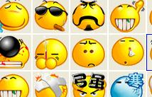
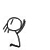
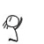
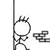
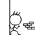
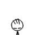
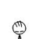

[建议]表情是不是可以更新换代了？管理请进
#1 [建议]表情是不是可以更新换代了？管理请进 作者：掌棋如烟 发表时间：2011-9-24 20:35:13

现有的表情好乏味了，是不是可以征集一些丰富点的表情，我先提供几张，大家提提意见
 

 



 

还有其他系列的，可行的话再说
［此帖子已被 掌棋如烟 在 2011-9-24 20:37:34 编辑过］
［ 小小亦默 于 2011-9-26 13:40:29 时花20金币送鲜花一朵］
#2 Re:[建议]表情是不是可以更新换代了？管理请进 作者：珠子 发表时间：2011-9-24 21:03:13
 围观。。。。
围观。。。。#3 Re:[建议]表情是不是可以更新换代了？管理请进 作者：小红眼镜 发表时间：2011-9-24 21:05:34
 围观。。
围观。。
#4 Re:[建议]表情是不是可以更新换代了？管理请进 作者：梧桐风 发表时间：2011-9-24 21:10:44
复制一下就可以啦AM6%7DXPCQ@)JJIW1.gif)
#5 Re:[建议]表情是不是可以更新换代了？管理请进 作者：掌棋如烟 发表时间：2011-9-24 21:23:36
 那不是每次都要找到这个帖子 然后再复制么
那不是每次都要找到这个帖子 然后再复制么
#6 Re:[建议]表情是不是可以更新换代了？管理请进 作者：清风明月月 发表时间：2011-9-24 22:20:10
支持,,,,#7 Re:[建议]表情是不是可以更新换代了？管理请进 作者：虎哥 发表时间：2011-9-25 1:06:04
珠子居然围观了……#8 Re:Re:[建议]表情是不是可以更新换代了？管理请进 作者：屏蔽 发表时间：2011-9-25 4:11:11
引用：
原文由 虎哥 发表于 2011-9-25 1:06:04 :
珠子居然围观了……
明显小红又上错号了……
#9 Re:[建议]表情是不是可以更新换代了？管理请进 作者：吉小鼠 发表时间：2011-9-25 10:00:10
 显然我也觉得我们的表情不够用。。。。。。。。。
显然我也觉得我们的表情不够用。。。。。。。。。
#10 Re:[建议]表情是不是可以更新换代了？管理请进 作者：踵酃 发表时间：2011-9-25 11:04:43
 好想吃了小红眼睛的头像。
好想吃了小红眼睛的头像。
#11 Re:[建议]表情是不是可以更新换代了？管理请进 作者：小元 发表时间：2011-9-25 14:45:27
新表情明显好看很多#12 Re:[建议]表情是不是可以更新换代了？管理请进 作者：西北狼梦魂 发表时间：2011-9-25 16:44:22
支持一下楼主！
#13 Re:[建议]表情是不是可以更新换代了？管理请进 作者：有志青年 发表时间：2011-9-26 13:29:43
发我邮箱吧ntcyz@qq.com#14 Re:[建议]表情是不是可以更新换代了？管理请进 作者：小小亦默 发表时间：2011-9-26 13:40:17
哈哈 这个建议好
#15 Re:Re:[建议]表情是不是可以更新换代了？管理请进 作者：掌棋如烟 发表时间：2011-9-26 14:34:34
引用：
原文由 有志青年 发表于 2011-9-26 13:29:43 :
发我邮箱吧ntcyz@qq.com
挑了一些发了，以供参考
#16 Re:[建议]表情是不是可以更新换代了？管理请进 作者：有志青年 发表时间：2011-9-26 16:40:24
已更新，谢谢如烟

#17 Re:[建议]表情是不是可以更新换代了？管理请进 作者：魔铃 发表时间：2011-9-26 17:17:04

#18 Re:[建议]表情是不是可以更新换代了？管理请进 作者：战乱 发表时间：2011-9-26 18:06:05

#19 Re:[建议]表情是不是可以更新换代了？管理请进 作者：小小亦默 发表时间：2011-9-26 18:13:15
 这个表情 笑死我了
这个表情 笑死我了